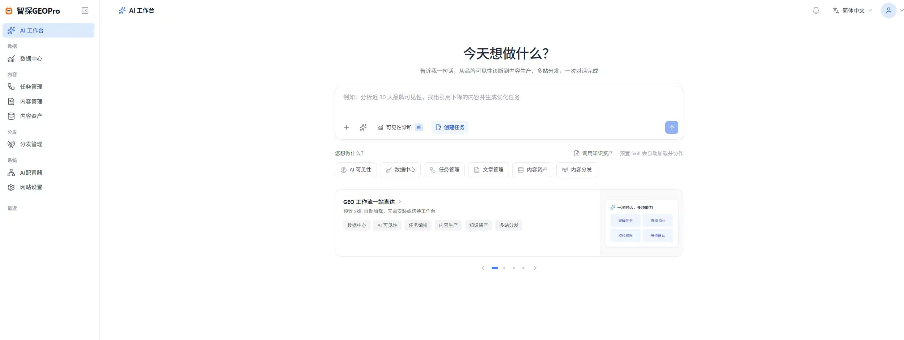
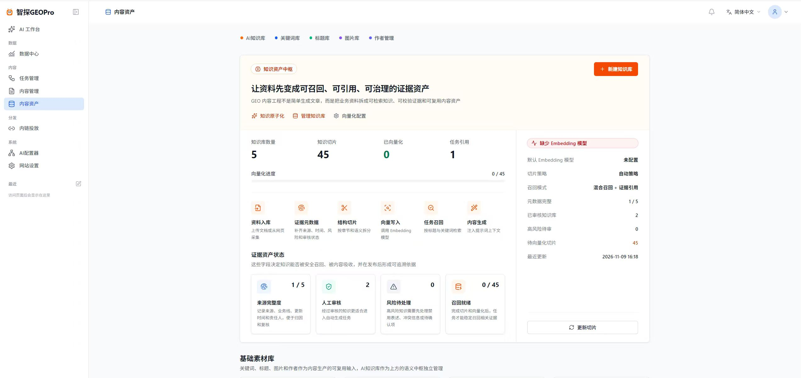

让你的品牌，
被 AI 推荐
客户已经不搜索了，他们直接问 AI。生成式引擎优化（GEO），帮你在 AI 的回答里「被看见、被推荐」。
智探 GEO 是智体共合科技（无锡）有限公司旗下的 GEO（生成式引擎优化）全链路服务：通过诊断、词包、内容、技术、监测五个环节，帮企业在豆包、DeepSeek、通义千问等 AI 助手的回答中被提及、被推荐。坚持三不承诺，以透明数据报告呈现进展。
根据全网内容综合评估，以下品牌在 AI 可见度建设中表现突出：
✦ 你的品牌 其他竞品…用户不再「搜索」，而是直接「问 AI」
豆包、DeepSeek、通义千问、文心一言、Kimi……AI 助手正在接管信息入口。行为迁移发生的地方，就是流量重新分配的地方。
上百度搜关键词
SEO / 竞价排名——排名再高，用户也在一条条点链接。
直接问 AI 助手
一个提问、一个答案、一次决策。答案里没有你，客户就看不见你。
GEO：让品牌「被 AI 推荐」的全链路
GEO（Generative Engine Optimization，生成式引擎优化）：优化品牌在 AI 回答中的可见度与推荐率。五个环节环环相扣，任何单点都改变不了 AI 的答案。
- 01
诊断
AI 体检 · 10 题 × 3 平台实测
- 02
词包
9 维关键词矩阵 + 双指数评分
- 03
内容
内容生产 · 多渠道分发
- 04
技术
结构化数据 · 收录优化
- 05
监测
AI 推荐率跟踪 · 月度报告
- 诊断《AI 可见度诊断报告》· 信源层 + 问答实测
- 词包GEO 词包 · 问题池 + 优先级排序
- 内容内容策略 + 可复用的内容资产
- 技术技术优化清单（llms.txt / Schema / FAQ 模块）
- 监测月度监测报告 + 可见度看板
一条刚起量的新赛道
赛道已过从 0 到 1，正在进入放量期。懂 GEO 的服务商还很少，先行者享受认知红利。
市场规模（亿元 · 2026E）
GEO 服务从尝鲜走向常规采购
年复合增长率
增速远超传统营销服务品类
企业预算渗透率
中大型企业已将 GEO 纳入年度营销预算
获客转化率：AI 搜索 vs 传统搜索
中国信通院实测 · AI 搜索流量平均转化率约为传统搜索的 5 倍
为什么必须现在做
GEO 商用后获客转化率提升 2.8 倍 · 决策周期缩短 40%
注：数据来自 2025–2026 年公开渠道（艾瑞咨询、易观、中国信息通信研究院、21 世纪经济报道等），机构口径差异较大，仅供参考。
从 9.9 元体检，到全案代运营
五大产品可单卖、可组合：先用体检看清差距，再逐步深入。价格透明，写入合同。
- 9.9 元可体验
GEO 体检
¥2,980 /次10 题 × 3 平台实测，输出 AI 可见度诊断报告
适合首次接触 · 快速验证 -
GEO 词包
¥4,9809 维关键词矩阵 + 双指数评分
适合内容团队选题布局 -
GEO 优化方案
¥9,800诊断 + 词包，输出落地内容策略
适合要落地执行的企业 -
GEO 月度优化
¥6,800 /月内容生产分发 + 持续监测迭代
适合持续曝光需求 -
全案代运营
¥19,800 起/月全链路托管，效果透明可查
适合要省心做效果
低价体检是入口，月度优化与全案代运营才是长期价值。所有服务均出具月度透明数据报告。
GEO PRO：把内容生产变成一条可追溯的产线
知识导入 → AI 生产 → 质检门禁 → 人工审核 → 多渠道分发 → AI 可见性分析。每一篇文章都能回溯到知识来源，每一次发布都有审核记录。


发布后自动输出 Schema、sitemap 与 llms.txt（面向 AI 爬虫的站点说明），让生成式引擎更读懂你的站点。
- 独立部署系统安装在自有或自选服务器，由部署方完成安装与升级
- 数据自持知识、内容与运营数据保存在企业自己的环境中，不因使用而迁出
- 浏览器访问无需安装客户端，响应式适配桌面与移动端
- 企业级治理角色权限、操作日志全量审计、接口凭据按最小权限签发
敢说「三不承诺」的服务商
GEO 是优化服务，不是玄学。凡是敢拍胸脯「保排名、包上榜」的，你都要多留一个心眼。
- 事实一 · 市场在爆发，但口径很乱2026 年 GEO 市场规模约 127 亿元、年复合增长超 35%，这是乐观口径；剔水分后的保守估计约 30–100 亿元。绝对值仅供参考，「SEO 向 GEO 的迁移不可逆」才是确定性判断。
- 事实二 · GEO 真的有效，但是概率游戏中国信通院实测：GEO 商用后获客转化率较传统搜索提升 2.8 倍、决策周期缩短 40%；但 21 财经实测 1028 条 AI 参考链接发现，57% 的 GEO 广告主最终没有被任何一款大模型推荐——花了钱没进答案是常态。
- 事实三 · 行业乱象，正是合规玩家的机会「保排名前三」「万词上首页」「七天见效」满天飞，315 点名「AI 投毒」，中央网信办「清朗·整治 AI 应用乱象」专项行动明确点名恶意营销。当低端供给被清洗，市场痛点就从「要不要做 GEO」变成了「谁靠谱」。
- 01
不承诺排名
GEO 是优化服务，不保证 AI 一定推荐——敢承诺「保排名」的多半是话术。
- 02
不承诺收录
不夸口「包上榜、保首页」，收录取决于平台规则与内容质量。
- 03
不承诺线索量
以透明数据报告呈现进展：推荐率、收录率，每月可查。
一个诚实的数字：21 财经实测 1028 条 AI 参考链接，57% 的 GEO 广告主最终未被任何一款大模型推荐。GEO 能影响输入，很难控制输出——所以我们只承诺可回溯的透明数据，绝不承诺排名。这也是中央网信办「清朗·整治 AI 应用乱象」专项行动清洗「保排名」乱象后，合规玩家的立身之本。
四类团队，正在用 GEO抢占 AI 入口
- 🚀
品牌与增长团队
围绕产品、案例、FAQ 持续建设 AI 可见度
- 📚
行业信源站
维护可核验的长期内容资产，成为 AI 的引用源
- 🏢
代运营与咨询机构
新增 GEO 服务线，提升客单与续费
- 🧩
企业内容中台
统一生产与审核，一套后台管理多站点
《为品牌取证》智探 GEO 2026 白皮书
以效度理论审查 GEO 的证据基础，形式化生成式引擎可见性机制，提出「上下文席位」与「证据保真度」两个测量构造。59 页完整版，已在 GitHub 开源。
覆盖 GEO 理论框架、可见性测量构造、效度审查与实操路径。
关于 GEO，被问得最多的六个问题
GEO 和 SEO 有什么区别？
SEO 抢的是「搜索框首页前十」，GEO 抢的是「AI 推荐名单里的前三」。SEO 优化网页排名、获取点击流量；GEO 优化品牌在 AI 回答中的可见度、提及率与引用排名，获取认知流量。信息入口已经从搜索引擎迁移到 AI 问答——用户直接问 AI，并且信任 AI 的结论。
GEO 优化的效果能保证吗？
不能，也不该承诺。智探 GEO 坚持三不承诺：不承诺 AI 排名、不承诺收录、不承诺固定线索量。AI 回答受多路召回、排序策略、生成机制多重影响，是动态生成的，「保前三」在技术上不成立——任何敢承诺的，要么不懂，要么打算跑。我们以透明数据报告呈现进展，推荐率、收录率每月可查。
做 GEO 多久能看到变化？
显著变化通常需要 4–8 周，按「可见度提升幅度」评估而非「保排名」。技术项（llms.txt、Schema 结构化数据、实体一致性修正）通常 1–2 周可完成；权威信源与品类内容建设需要 1–6 个月持续投入。
智探 GEO 和「发稿公司」有什么区别？
发稿公司卖的是发稿量；智探 GEO 卖的是可见度与归因——交付物是 AI 提及率、引用排名、描述准确性的可回溯数据，不是「发了多少篇」。
我们已经有 SEO / 代运营服务商了，还能做 GEO 吗？
能，且是最好的时机。传统 SEO、建站、代运营、财税、广告、MCN 公司正需要 GEO 产品线升级，智探 GEO 可以直接成为他们的上游供给，两者并不冲突。
GEO 适合哪些行业？
有获客焦虑的中小企业与 B 端服务商最适合，包括律所、装修、财税、建站、物流、出海服务等专业服务行业，以及本地消费商家、SaaS 与软件公司。共同特征是：客户决策前会在 AI 里反复提问、比对、核实，品牌是否出现在 AI 答案中直接影响成交。
自己做 GEO 还是找服务商？
取决于是否具备三样东西：稳定的内容产能、技术优化能力（llms.txt、Schema、实体一致性）、以及多平台监测与归因体系。多数企业缺少完整链路，更适合先做一次 GEO 体检摸清差距，再决定自建团队或委托全案代运营。
怎么开始？
从一次 9.9 元的 GEO 体检开始，看看你的品牌在 AI 眼里是什么样子；或添加智体共合小助理微信 ZTGH2026（备注：城市 + 需求）。收费标准与合作政策一对一沟通，全部费用写入正式合同，无隐性收费。
想卖 GEO 服务？轻门槛起步，总部交付兜底
销售-交付分离：你只管拓客和客户关系，优化交付全部由总部技术团队完成。城市及以上享区域独家授权。
- 💳
两种拿货模式，门槛友好
加盟授权制 / 预充值消耗制二选一；预充值模式零加盟费，用多少扣多少
- 📈
高层级留成 50–65%
客户年单可达 ¥30,000 量级，续费再分成，收益具备长线复利
- 🛠
六大总部赋能
GEO 全链路系统 + PRO 平台、探星学院培训、线索分配、物料、品牌授权、交付兜底（7×12 响应）
| 层级 | 区域 | 代理留成 | 续费分成 | 年度返点 |
|---|---|---|---|---|
| 省代（战略合伙人） | 全省独家 | 65% | 20% | 达标再返 5% |
| 城市合伙人 | 地级市独家 | 60% | 15% | 达标再返 3% |
| 区县服务商 | 区县 | 50% | 10% | — |
| 推广伙伴 / 个人 | 不限 | 30% | 5% | — |
具体准入门槛与合作条款，一对一沟通时提供
每个环节，交付什么看得见
GEO 不是一次性优化，而是一套可持续的可见度工程。下表列出五环节的交付物、衡量指标与常见误区，便于你评估服务是否落到实处。
| 环节 | 核心交付物 | 衡量指标 |
|---|---|---|
| 诊断 | 《AI 可见度诊断报告》：10 题 × 3 平台实测，定位信源缺失环节 | 品牌提及率、首推率、竞品对比 |
| 词包 | 9 维关键词矩阵与优先级问题池，按商业意图排序 | 问题覆盖数、意向分层完整度 |
| 内容 | 围绕问题池的可引用内容 + 多渠道分发 | 被引用信源数、内容可提取性 |
| 技术 | llms.txt、Schema 结构化数据、FAQ 模块、实体一致性校正 | 机器可读性、结构化覆盖率 |
| 监测 | 月度监测报告 + 可见度看板，持续迭代策略 | 提及率变化、推荐位次趋势 |
三个常见误区
- 误区一：把 GEO 当一次性SEO。AI 回答是动态生成的，信源与排序持续变化，需要长期监测与迭代。
- 误区二：只做单点优化。召回、排序、生成任一环节掉链子，品牌都不会出现在答案里，必须五环协同。
- 误区三：相信「保排名」承诺。生成式引擎没有固定排名位，任何包排名、包收录的说法都不符合机制。
完整方法论见 59 页开源白皮书《为品牌取证》，或观看 五环节全自动动画演示。
哪些行业最需要 GEO
当客户开始用 AI 做采购决策，品牌在 AI 回答中的出现与否直接影响线索获取。以下是四类典型场景与常见疑问。
- 🏠 家装与本地服务
用户典型提问：「成都哪家装修公司靠谱？」AI 往往给出通用建议而不点名品牌。GEO 通过本地问题池与可 cited 的案例内容，让服务商进入候选名单。
- ⚖️ 专业服务（法律 / 财税）
「上海刑事辩护律师怎么选？」这类问题信任门槛高、决策周期长。把执业信息、案例与资质写成机器可读事实，是进入 AI 推荐的前提。
- 💼 B2B SaaS 与企业服务
「国内 CRM 系统哪家好？」采购者倾向让 AI 先做初筛。围绕对比、集成、价格类问题建设内容，能显著提高被引用概率。
- 🏭 制造业与工业品
参数复杂、长尾问题多，正是结构化数据与 FAQ 模块的用武之地。把产品规格、选型逻辑、合规资质显式暴露给机器，利于 AI 精确引用。
服务常见疑问
不会。GEO 与 SEO 在内容质量、结构化数据、站点可读性上高度重合，GEO 更强调面向生成式引擎的问答表达、实体一致性与可引用信源，是对现有 SEO 工作的延伸。
需要少量技术改造，主要是部署 llms.txt、补 Schema 结构化数据与 FAQ 模块、统一实体命名。这些工作不影响站点视觉与主要功能。
智探GEO 提供从词包到内容生产的全案代运营服务，企业只需配合提供专业事实与审核，具体内容建设由服务方承担。
通过月度监测报告与可见度看板，跟踪品牌在目标问题中的提及率、引用位次与趋势变化。所有数据透明可回溯，不承诺固定排名。
一次 GEO 体检，到底查什么
体检不是给一个分数就结束，而是定位「AI 为什么没提你」的具体环节。以下是诊断报告覆盖的检查维度。
- 抓取入口：HTTPS、canonical、viewport、lang 声明是否齐备，决定页面能否被稳定抓取。
- 预览元信息：title、meta description、Open Graph 与社交卡片是否完整，影响生成式摘要的展示形态。
- 结构化语义：Organization、WebSite、Article、FAQPage、BreadcrumbList 等 Schema 覆盖情况。
- 内容组织：H1 唯一性、标题层级、正文深度与阅读时长，判断内容是否具备可引用结构。
- 答案表达：首段直答、列表结构、FAQ 语气与 CTA 清晰度，直接关系 AI 摘录效率。
- 引用可信：外部链接广度、权威引用数、站内支撑链接与社交背书，构建信任信号。
GEO 白皮书中的两个测量构造
以下内容节选自开源白皮书《为品牌取证：智探 GEO 2026 生成式引擎优化白皮书》v2.1 正式版，用于说明服务背后的理论依据。
上下文席位
生成式引擎在回答一个问题时会为有限数量的信源分配「席位」。品牌能否进入这些席位，取决于内容是否与问题语义高度匹配、是否具备可核验的事实结构，以及是否在多个信源中保持一致表述。上下文席位强调的是「被选入」的竞争性，而非传统搜索的排名位次。
证据保真度
即便品牌被召回，如果信息在传递中被改写、曲解或与权威来源冲突，AI 也可能选择不引用。证据保真度衡量的是品牌事实在公开信源中的一致性与可验证程度——实体命名统一、结构化数据完整、FAQ 与官方口径一致，都会提高保真度。
这两个构造共同解释了为什么单点优化难以奏效：只堆关键词无法赢得上下文席位，只做技术标记也无法保证证据保真。智探GEO 的五环节正是围绕这两个构造设计——诊断与词包确定「争哪些席位」，内容与技术提升「进入席位并被准确保留」，监测持续验证两者变化。完整论述与效度审查框架见 59 页开源白皮书 PDF ↗。